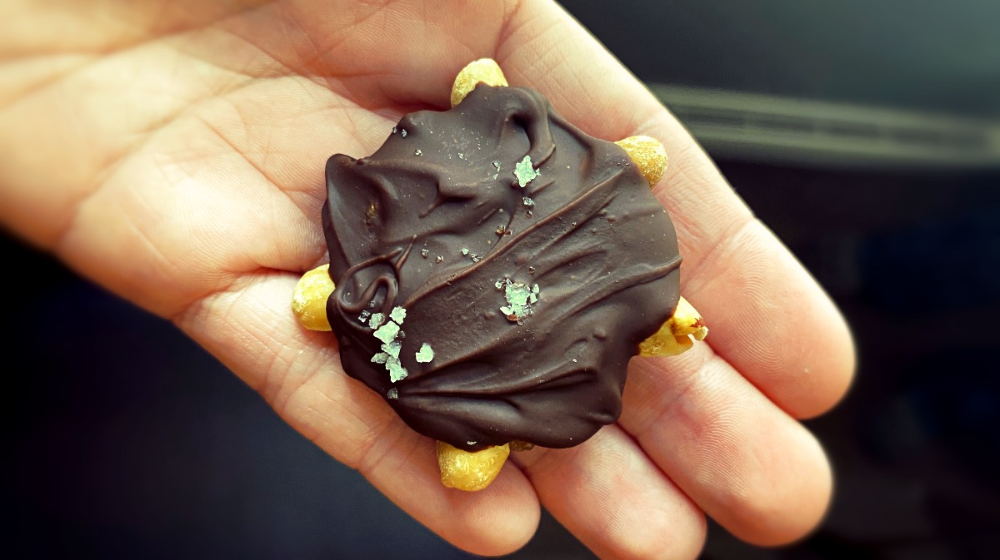

chocolate turtles
20-24 turtles — 60 minutes
Rek's dad has always been a huge fan of the Nestle chocolate turtles. We made some for him many years ago for Christmas, he really loved it, and we decided to make some again this year to serve as a dessert for a family dinner composed mainly of non-vegans. We wanted to serve a dessert that anyone could enjoy, and that didn't use any cryptic, hard-to-find, ingredients often present in vegan desserts.
There are many recipes for vegan chocolate turtles out there, but since ours has a few variations we figured we would include it. I was curious and began to research the first mention of turtles made with dates, the oldest online entry I have found so far is this one(2010). This doesn't mean the author was the first to think of it, but they certainly deserve some credit.
Dates. In this recipe, we used deglet noor dates because they are good and inexpensive, but it's possible to use other varieties. If the dates are larger, refer to the weight listed in the recipe, not the number of dates. The dates sold in stores may already be pitted, if they are pitted they will weigh a little less.
Peanuts. Use unsalted varieties. The peanuts sold in stores may or may not be pre-roasted, if not, it is possible to roast them yourself in the oven. Shelled peanuts: roast at 180°C (350°F) for 15 to 20 minutes. In shell peanunts: roast at 180°C (350°F) for 20 to 25 minutes. We used peanuts because Rek has a tree-nut allergy, it is possible to use any kind of nut, anything that will help form the head and legs of a turtle.
Tahini. The tahini is optional, but it adds a nice flavor to the dates.
Coconut oil. Adding coconut oil to the chocolate is optional, but it adds shine to the chocolate and makes it harden more readily.
Leftover chocolate? Pour it over another piece of parchment paper, sprinkle dried fruit over it(press each fruit down into the chocolate) and then sprinkle some coarse sea salt overtop. Let the chocolate cool, and then break off pieces to eat it!
 deglet noor dates400 g
deglet noor dates400 g tahini45 ml
tahini45 ml peanuts72, roasted
peanuts72, roasted dark chocolate200 g
dark chocolate200 g coconut oil30 ml
coconut oil30 ml saltcoarse, to taste
saltcoarse, to taste
preparation
- Prepare some parchment paper over a baking tray(or a very large dish), enough to accomodate 24 x 5 cm turtles, and lay it on the kitchen counter.
- Remove the pits from 400 g (roughly 50 small dates) of deglet noor dates, chop off the stems, and then chop the dates into smaller pieces. Steam the chopped dates on the stovetop for 10 minutes using a double boiler(with steam basket), or by soaking the dates in hot water. Moistenings the dates with heat makes it easier to grind them into a puree.
- Transfer the softened dates into a food processor, and blend them into a puree. Add 45 ml (3 tbsp) of tahini to the puree, blend again. Set aside.
- Pour 3 cm (1 inch) of water into a pan and bring up to medium heat. In the meantime, transfer 200 g (roughly 7 oz) of dark chocolate chunks into a heat-proof bowl(not plastic). When the water in the pan is hot, add the bowl — the simmering water will melt the chocolate without burning it. Stir in 15 ml (2 tbsp) of coconut oil. When the chocolate is smooth and uniform, remove the bowl from the heat, and pour 24 tablespoonfuls of chocolate over the parchment paper(leaving some space in-between each one). Using the back of a spoon, spread the chocolate into a rough 5 cm circle. This is to form the underside of the turtle, you can also skip this part and coat the underside later(see the last step).
- The pureed dates mixture will be very sticky, we like to keep a bowl of water nearby and to occasionally dip our hands in it to handle it — we make sure to shake off the excess moisture. Pick up enough mixture with your hands to form a small ball(approx. 2.5 cm | 1 inch), flatten them into thick discs, then place one on each 5 cm chocolate circle.
- Use a whole roasted peanut for the head of the turtle. Use peanut halves to make the front and back legs, pressing each peanut gently into the date caramel.
- Pour more chocolate mixture over the top of each turtle, smoothing and distributing the chocolate using the back of a spoon.
- Sprinkle a few grains of coarse sea salt over each turtle, then transfer the tray to the refrigerator(or a cool place) for 30-40 minutes to allow enough time for the chocolate to harden. If left at room temperature, the chocolate will eventually harden, but it will take more time.
- If you waited until now to coat the underside of the turtles with chocolate, you can now flip all of the chocolate turtles(the chocolate needs to be hard) and coat their underside with a thin layer of chocolate using the back of a spoon to better coat the date caramel. Lay each turtle upside down on the baking tray. When the chocolate is hard, fly them right side up again(they'll be a little lopsided, but that's ok).